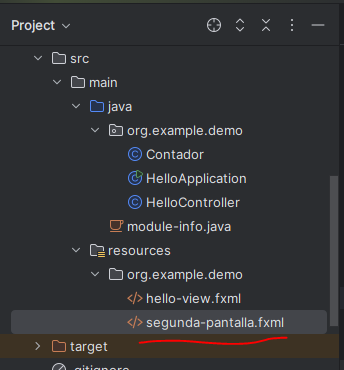
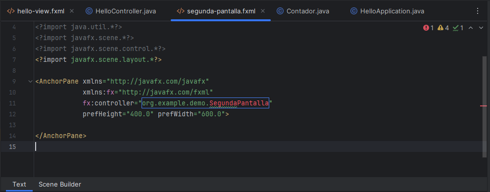
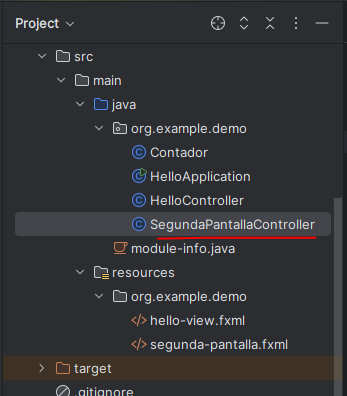
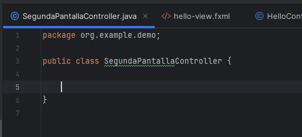
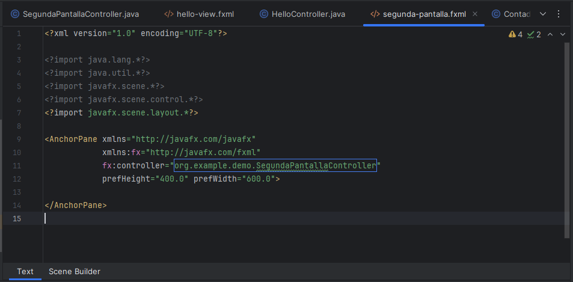
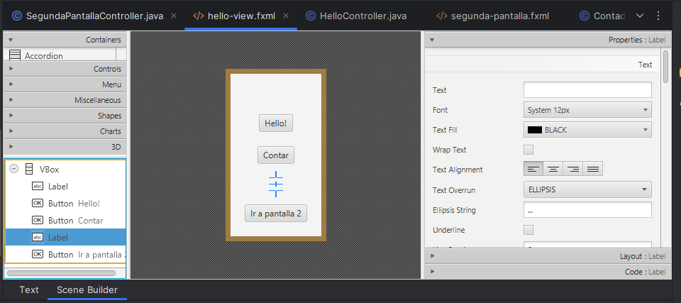
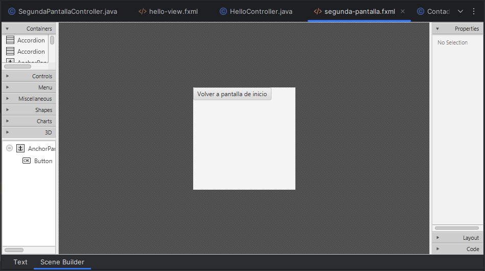
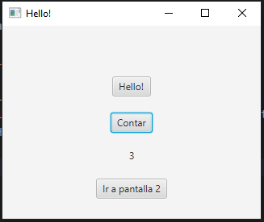
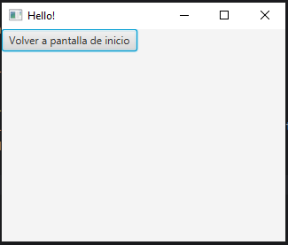
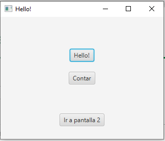

Hasta ahora hemos estado toqueteando una sola pantalla, pero, ¿cómo podemos movernos entre pantallas en caso de tener más de una?
Pues para empezar, necesitaremos tener en nuestro proyecto más de una vista, así que vamos a crear un nuevo fxml llamado "segunda-pantalla.fxml" en la carpeta resources:

Al crearla y abrirse, empezará a quejarse porque no le hemos indicado qué controlador se hará cargo de esta pantalla:

Vamos a crearlo también:


Ya podemos indicarle al fxml que este va a ser su controlador:

Introduciremos un nuevo botón en cada uno de los fxml que servirá para ir de una pantalla a otra.
- Pantalla hello-view:
<?xml version="1.0" encoding="UTF-8"?>
<?import javafx.geometry.*?>
<?import javafx.scene.control.*?>
<?import javafx.scene.layout.*?>
<VBox alignment="CENTER" spacing="20.0" xmlns:fx="http://javafx.com/fxml/1" xmlns="http://javafx.com/javafx/17.0.12" fx:controller="org.example.demo.HelloController">
<padding>
<Insets bottom="20.0" left="20.0" right="20.0" top="20.0" />
</padding>
<Label fx:id="welcomeText" />
<Button onAction="#onHelloButtonClick" text="Hello!" textAlignment="CENTER" />
<Button fx:id="contador" text="Contar" textAlignment="CENTER" />
<Label fx:id="contando" />
<Button text="Ir a pantalla 2" textAlignment="CENTER" onAction="#irAPantalla2" />
</VBox>

- Pantalla segunda-pantalla:
<?xml version="1.0" encoding="UTF-8"?>
<?import java.lang.*?>
<?import java.util.*?>
<?import javafx.scene.*?>
<?import javafx.scene.control.*?>
<?import javafx.scene.layout.*?>
<AnchorPane xmlns="http://javafx.com/javafx"
xmlns:fx="http://javafx.com/fxml"
fx:controller="org.example.demo.SegundaPantallaController"
prefHeight="200.0" prefWidth="200.0">
<Button text="Volver a pantalla de inicio" textAlignment="CENTER" onAction="#irAPantallaHello" />
</AnchorPane>

Ahora nos queda modificar los controladores. Pero antes, deberemos realizar unas adaptaciones en nuestra clase de la App principal, HelloAplication.java.
- La primera modificación que deberemos hacer es sacar la definición de la variable de tipo Scene que está dentro del .start(), para hacerla estática y accesible desde cualquier método de la clase:
package org.example.demo;
import javafx.application.Application;
import javafx.fxml.FXMLLoader;
import javafx.scene.Scene;
import javafx.stage.Stage;
import java.io.IOException;
public class HelloApplication extends Application {
private static Scene scene;
@Override
public void start(Stage stage) throws IOException {
FXMLLoader fxmlLoader = new FXMLLoader(HelloApplication.class.getResource("hello-view.fxml"));
scene = new Scene(fxmlLoader.load(), 320, 240);
stage.setTitle("Hello!");
stage.setScene(scene);
stage.show();
}
public static void main(String[] args) {
launch();
}
}- Ahora, crearemos el siguiente método nuevo:
private static Parent loadFXML(String fxml) throws IOException {
FXMLLoader fxmlLoader = new FXMLLoader(HelloApplication.class.getResource(fxml + ".fxml"));
return fxmlLoader.load();
}Si te fijas, es lo mismo que hace el .start(), pero en versión reutilizable.
- Crearemos también este otro método, que llamará cada controlador para cambiar de pantalla cuando sea necesario.
static void setRoot(String fxml) throws IOException {
scene.setRoot(loadFXML(fxml));
}Ahora sí, vamos a cada controlador a escribir el código necesario.
- Controlador HelloControler:
package org.example.demo;
import javafx.event.ActionEvent;
import javafx.fxml.FXML;
import javafx.scene.control.Button;
import javafx.scene.control.Label;
import java.io.IOException;
public class HelloController {
@FXML
private Label welcomeText;
@FXML
private Button contador;
@FXML
private Label contando;
@FXML
public void initialize(){
Contador cont = new Contador();
contador.setOnAction(e -> {
cont.contar();
contando.setText(Integer.toString(cont.getContador()));
});
}
@FXML
protected void onHelloButtonClick() {
welcomeText.setText("Welcome to JavaFX Application!");
}
@FXML
public void irAPantalla2() throws IOException {
HelloApplication.setRoot("segunda-pantalla");
}
}- Controlador SegundaPantallaController:
package org.example.demo;
import javafx.fxml.FXML;
import java.io.IOException;
public class SegundaPantallaController {
@FXML
public void irAPantallaHello() throws IOException {
HelloApplication.setRoot("hello-view");
}
}
Ya podemos probarlo:
  